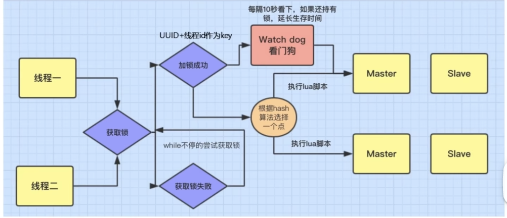

场景题
Q1 Redis 和 本地缓存的区别是什么？
其实，Redis的优势就在于，它是分布式的存储而且基于内存。而本地缓存是存储在本地引用程序以及服务器上，但是 只能是本地。所以二者的优缺点就很明显了:
-
速度 : 速度方面，
Redis是基于内存的，所以速度是非常快的。而本地缓存是存储在本地的，所以速度也是很快的。但是Redis可能会涉及分布式的问题，所以速度可能会慢一些。而本地缓存是从本地直接读取，因此速度会更快一点。刚好，有时候对于存储会分成三级，分别是本地缓存、Redis、数据库。最大限度的提高数据访问的性能，同时保证了数据的一致性 -
网络延迟方面: 其实很好理解，因为是分布式存储缓存，那么如果遇上网络通信不好的情况，那么就会导致延迟。而本地缓存是存储在本地的，所以不会有网络延迟的问题。
-
拓展性: 其实也很自然，Redis是分布式缓存，可以进行拓展，而本地缓存是存储在本地的，所以不具备拓展性。所以 前者的使用范围更广。
Q2 Redis 的应用场景:
- 缓存 : 这个很好理解，存储方便，同时读取缓存的速度也是快的。
- 排行榜 : 因为
Redis中有一个Zset的数据类型，可以进行排行榜的存储。 - 分布式锁 : 因为
Redis是单线程的，所以可以用来进行分布式锁的存储。 - 消息队列 : 因为
Redis有List的数据类型，可以用来进行消息队列的存储。可以实现一个轻量的消息队列。 - 计数器 : Redis 中的操作都是原子性的，可以进行计数器和统计数据的存储，比如网站访问量的统计，点赞功能的统计。
什么是分布式锁呢？
分布式锁 是一种在分布式系统中协调多个节点（服务实例、进程或线程）对共享资源进行互斥访问的机制。其核心目标是确保在分布式环境下，同一时刻只有一个节点可以执行某个关键操作（如修改共享数据、访问外部服务等），从而避免并发导致的资源竞争和数据不一致问题。
我们也可以这样理解，之前遇到的锁都是 线程之间对于共享资源的占用，所以需要加锁，但是这里我们需要考虑的是 分布式中的不同节点的需要加锁，来对共享资源的互斥访问
场景: 一个简单的场景，电商系统中的不同用户同时抢购同一个商品，要保证库存的原子性增减，就需要使用分布式锁
- 通过 分布式锁 可以保证在同一时刻只有一个用户可以抢购成功，避免超卖的情况
我们在单服务器的时候，只用考虑 线程之间的锁，但是在分布式的情况下，我们需要考虑 不同节点之间的锁，所以就需要引入 分布式锁 的概念。因为 如果是分布式的情况，那么每一台服务器，其实就可以允许 一个线程来访问，这样子 多台服务器又回到了多个线程的情况，所以就需要引入 分布式锁 的概念。不然的，我们的同步锁也只是锁住了一台服务器的线程，而不是多台服务器的线程。 在处理负载均衡的时候，就会出现问题，所以我们需要用到分布式锁来处理
为了解决超卖问题，我们逐步来进行分析:
-
当服务器压力不是很大的时候:
- 如果我们只是进行不用锁的保护，会出现超卖的情况
- 如果使用 锁保护，我们进行单一服务器，那么的确可以做到保护的情况，但是如果有多台服务器，那么就会出现问题。
-
当服务器压力很大的时候，我们通常会选择
Nginx进行负载均衡，输送流量给不同的服务器来减轻同一服务器的负担。但是这样子就会出现问题，因为每一台服务器都是独立的，所以就会出现超卖的情况。因为 对于不同的服务器来说，他们本身也可以支持单线程，加锁情况下，但是我们把所有的服务器放在一起来看，就会发现，其实又回到了多线程的情况了。- 同步锁是 JVM 级别的，只能锁住该台服务器的该个线程。
- 使用分布式锁，也就是能保证了所有的服务器下，对于一个共享资源，只有单一的一台服务器的一个线程可以访问，这样就可以避免超卖的情况。
接下来我们来看看具体是怎么实现的:
分布式锁的实现？
Mysql 数据库中的分布式锁
我们可以利用数据库的唯一索引来进行实现:
1 2 3 4 5 6 | |
Redis 中的分布锁保护 SetNx
setNx 全称就是 (Set if Not Exist) 当且仅当指定的 KEY不存在的时候，设置该 KEY的值，如果键存在，那么就不做任何操作。
1 2 3 4 | |
所以我们就可以在对每次请求/操作的时候，统一一个指定的键来进行区分。就是在进行操作的时候，设置这个 SetNx 的值，如果返回的是 1，那么就说明获取到了锁，可以进行操作，如果返回的是 0，那么就说明没有获取到锁，就需要等待。接下来其他并发的线程就进入了自旋状态。
Warning:
问题1 : 死锁问题
我们需要在这里 利用 Expire对这个Key值添加一个过期时间。为的避免的就是在进行操作的时候，万一服务器挂掉了，这个时候就可以避免死锁的情况。
问题2 : 释放锁问题
同样的，有一种情况就是，我们设置了锁的过期时间，但是万一在锁过期的时候，我们操作还没有完成，这个时候就会出现问题。所以我们需要在这里进行释放锁的操作。也就是可以对锁进行续租的操作。
- 可以增加锁的过期时间
- 我们可以增加一个子线程，目的是用来心跳检测，也就是每10s的时候来确定一下目前这个上锁的线程是否仍然在进行。
- 如果不在进行了，那么就可以释放锁。
- 如果在线的话，就重新续约。
问题3 : 这个问题是根据上面的问题衍生而来的
可能出现的一种情况就是，万一锁在该线程完成前就释放了，其他的线程就会乘虚而入，等线程1完成的时候，就会释放线程2的锁，这个时候就会导致 锁的紊乱，所以我们采用了 UUID 来进行区分。来让锁和线程的 ID强绑定，保证了锁的唯一性。
Redis 中的 Redisson
Redisson 这个组件就可以来帮助我们来完成上述的操作，它是一个基于
Redis的 Java 的框架，可以用来进行分布式锁的操作。

1 2 3 4 5 6 7 8 9 10 11 12 | |
首先我们定义了 线程1 和 线程2 来帮助我们进行理解。两个线程的目的就是为了对同一个商品的商品数量进行更改，此时发生了冲突。所以我们接下来进行分析:
-
线程1 率先开始获取了锁，在获取锁的时候，线程2就只能陷入自旋。从而此时只有线程1在进行操作。
-
我们利用 线程id+uuid 来作为唯一的标识，来保证了锁的唯一性。
-
在处理业务的时候，出现了 watchDog 看门狗来帮我们进行续约的操作，也就是在锁的过期时间到了之后，我们可以进行续约的操作。
- 每10s会检查一下当前这个锁的线程是否还在进行中，从而进行了锁的续命操作。
同时我们的 Redisson 也会帮助我们进行负载均衡操作，通过Hash一致性算法来进行负载均衡的操作。
Q3 你说你知道了 Redisson 来帮助你实现了分布式锁，那么接下来有这样一个场景，如果你使用的是主从集群，但是主节点挂掉了，那么你的分布式锁还能继续使用吗？
首先，我们知道的是 Redis 是 AP 的数据库，也就是 高性能，高可用，但是不保证高一致性。所以可能会遇到的问题就是，我们选择了一个主节点进行设置一个锁，然后从节点进行同步。但是会出现一个问题就是 如果此时主节点挂掉了，但是从节点还没有同步到信息，这个时候就会出现不一致性到问题。
其实这个问题是比较好解决的，因为首先，我们知道了我们找到对应的 主节点 进行设置锁的操作完成的时候会返回一个 true.那么上述的问题就会发生在已经返回了 true,但是还没有同步到从节点的时候。这个时候就会出现问题。那么我们不妨延后一点时间，等待一下，看看从节点是否同步完成了。如果同步完成了，那么就可以进行操作，如果没有同步完成，那么就可以进行重试操作。
也就是 RedLock，保证了所有的节点存储完毕了，才可以进行操作。
Q4 Redis 的大Key是指什么呢
Redis 的大Key是指的是 单个Key 的值value 很大，比如说一个 List 的值很大，或者一个 Hash 的值很大。这样子就会导致 内存的占用 过大，从而导致了 内存的泄漏。
那么对于到底多大的 Key 是大key,这个是相对而言的，没有绝对的标准。
比如在 高并发，低延迟 的环境下，仅仅 10KB 就可以构成大KEY 了，但是在 低并发，高延迟 的环境下，1MB 也不算大KEY。我觉得这个更多的是看你的业务场景来决定的。也就是在当时的场景下，这个 Key 的大小时候比较明显的影响到了性能。
Q4.1 大Key的缺点
其实就是很明显的知道，本质就是性能下降带来的各种负面影响，因为占用的内存更大，那么就需要更多的时间来完成数据的读写/删除的操作，这样就会占用更多的CPU的时间和内存资源。对于网络拥塞也是如此，包括后续的集群中的主从集群，对于大key,主节点和从节点之间需要进行的同步的时间也更长，从而在高并发的环境下，更容易产生主从的数据不一致性
- 内存占用过高，甚至可能在高并发的情况下会导致内存耗尽
- 性能下降，因为大Key会占用大量的内存空间，从而很直接导致的问题就是 内存碎片的增加，从而会影响Redis的性能。同时对于
大Key的操作都会需要更多的时间来进行完成读写。 - 阻塞其他的操作，类似上面2的问题
- 网络拥塞，每次获取 大
Key产生大网络流量较大，可能会波及其他的服务。比如一个key占用的空间是1MB,每秒访问1000次，那么就有1000MB的流量
Q4.2 怎么解决大Key问题呢
-
实时监控内存水位 ： 很自然的想法就是因为 大
Key的定义是相对的，也就是是否已经影响到了性能。我们会时刻检测内存的使用情况，如果当前 Redis 的内存使用率已经超过了70%, 而且在一段时间内的内存使用增长率超过了20%... 也就是检测到了内存的使用情况的激增，这个时候就需要进行提醒。 -
定期清除过期数据 : 很多大
Key的形成是因为数据的增量，也就是类似如果value的类型是一个Hash，或者是一个 List,那么一开始的时候，数据量是很小的，但是随着时间的增长，数据量就会越来越大。所以我们可以定期的清除过期的数据，从而减少了内存的占用。 -
数据分片 : 对于大
Key的数据，我们可以进行数据的分片，也就是将数据进行分割，从而减少了单个Key的数据量，从而减少了内存的占用。